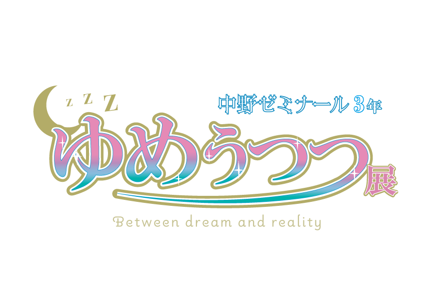

概要
ゼミ紹介
展示紹介
感想フォーム

2025年1月15日(水)～17日(金) H棟1階にて展示
概要
社会情報学部社会情報学科情報デザイン専攻
中野ゼミナール3年生
2025年1月15日(水)～1月17日(金)
H棟1階エントランスホール
ゼミ紹介
デジタル技術を用いたメディア表現や、デザインの思考方法や理論について研究しています。
展示紹介
中野ゼミの3年生が、それぞれの興味や問題意識、感じていることを元に作品を制作しました。
ゼミ生みんなが、空想と現実の関係性について考え作品を形作っていったことから、展示会タイトルを「ゆめうつつ展」としました。
感想フォーム
今後の活動の励みになりますので、ぜひお気軽にご回答ください。
下記のボタンよりご感想をお聞かせくださると幸いです。
ご回答はこちらから